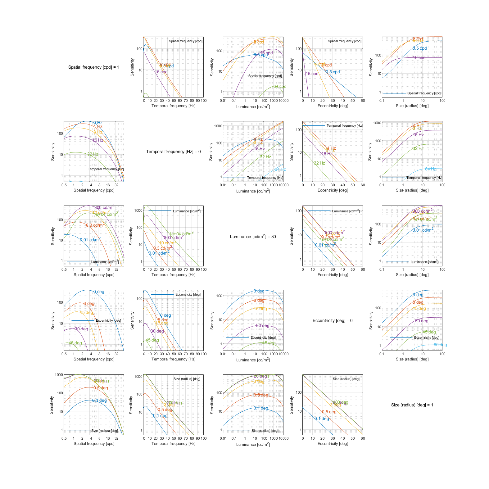
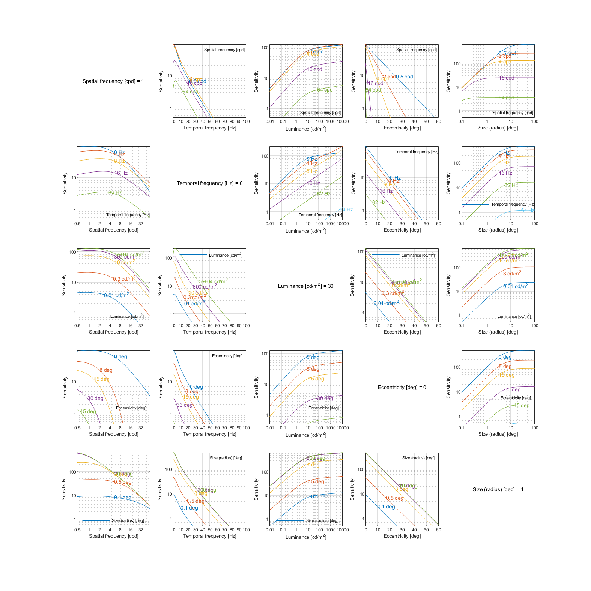
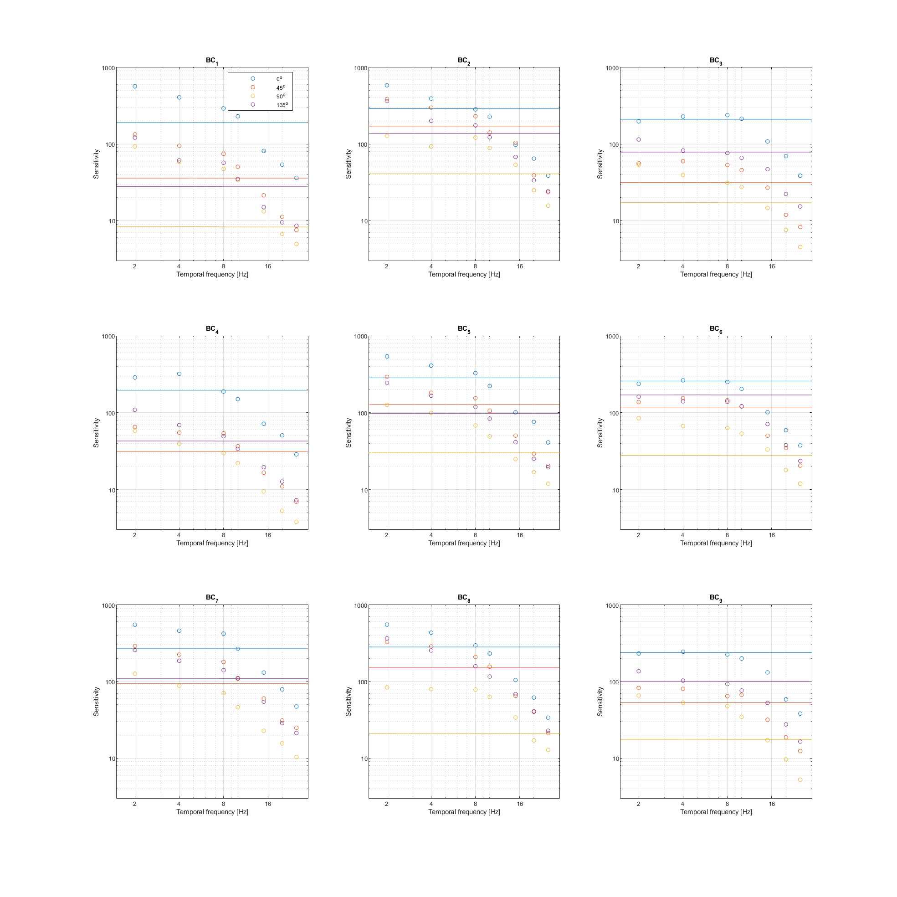
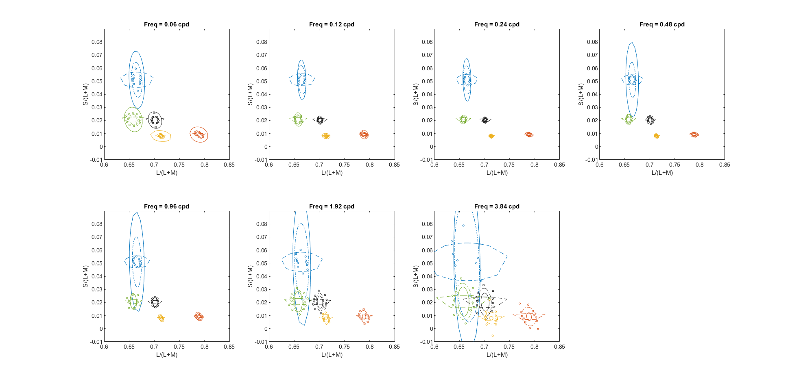
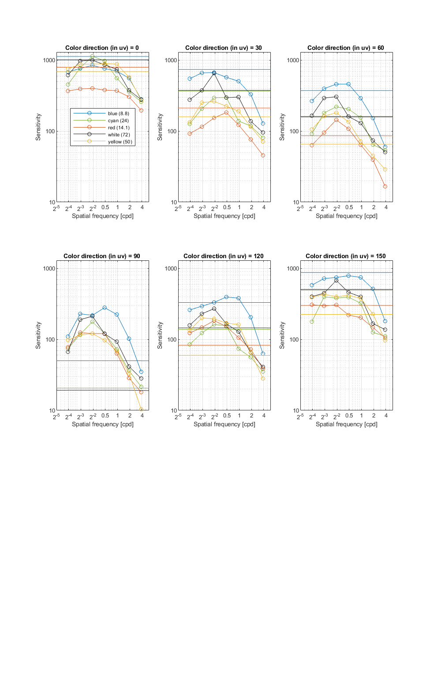

Fitting of chromatic Gabor and Disc datasets
Fitting error
Model parameters
stelaCSF
p.ach_sust.S_max = [ 2200.11 9.53934 0.405355 7.54866e-07 1.85526e+28 ];
p.ach_sust.f_max = [ 0.0181456 4.67284e+39 0.0412733 ];
p.ach_sust.bw = 2.80135;
p.ach_sust.a = 4.88677e-48;
p.ach_trans.S_max = [ 0.303473 4.68988e+06 ];
p.ach_trans.f_max = 1.43956e-15;
p.ach_trans.bw = 5.22064;
p.ach_trans.a = 0.000273289;
p.sigma_trans = 0.149301;
p.sigma_sust = 7.18137;
p.ecc_drop = 0.0296662;
p.ecc_drop_nasal = 0.0113638;
p.ecc_drop_f = 0.0190062;
p.ecc_drop_f_nasal = 0.0193858;
Cone contrast
p.cm(1).S_max = [ 431751 1.96712 0.341896 701879 9.43842e-05 ];
p.cm(1).f_max = [ 1.21764 542.211 0.197265 ];
p.cm(1).bw = 1.31965;
p.cm(1).gamma = 0.843053;
p.cm(1).Ac_prime = 157.393;
p.cm(2).S_max = [ 64125.4 39.0681 0.477706 ];
p.cm(2).f_max = 1.97e-06;
p.cm(2).bw = 4.81435;
p.cm(2).gamma = 1.12525;
p.cm(2).Ac_prime = 27.3797;
p.cm(3).S_max = [ 4866.89 91.2555 0.326656 ];
p.cm(3).f_max = 4.59816e-08;
p.cm(3).bw = 5.59;
p.cm(3).gamma = 1.52782;
p.cm(3).Ac_prime = 1.02435;
p.colmat = [ 0.00126073 0.431221 1.0107 1.91063 6.4188e-07 0.000164388 ];
M_lms2acc =
1.0000 0.4312 0.0000
1.0000 -1.0107 0.0002
-0.0013 -1.9106 1.0000
↸CSF model: castleCSF-temp

↸CSF model: stelaCSF

↸CSF model: Cone contrast

Legend
To keep the plots legible, only up to 3 models are plotted.

↸Dataset: [modelfest] ModelFest
Achroatic CSF as a function of frequency

↸Dataset: [colorfest] ColorFest
Chromatic CSF as a function of frequency

↸Dataset: [hdrvdp_csf] HDR-VDP CSF
Achromatic CSF as a function of frequency

Achromatic CSF as a function of size

↸Dataset: [hdr_csf] High Dynamic Range CSF
CSF as the function of frequency at different luminance levels (fixed number of cycles)

CSF for different number of cycles

↸Dataset: [hdr_csf_disc] High Dynamic Range Disc CSF
CSF as the function of size at different luminance levels

↸Dataset: [vanderHorst1969_a] Van der Horst & Gerard 1969
Chromatic contrast thresholds of rectangular flickering stimuli as a function of temporal frequency

Chromatic contrast thresholds of rectangular flickering stimuli as a function of luminance

↸Dataset: [vanderHorst1969_b] Van der Horst & Bouman 1969
Static chromatic contrast thresholds as a function of spatial frequency

Static chromatic contrast thresholds as function of luminance

Chromatic contrast thresholds for travelling sine waves as function of spatial frequency

Chromatic contrast thresholds for travelling sine waves as function of spatial frequency

Chromatic contrast thresholds for travelling sine waves as function of temporal frequency

Chromatic contrast thresholds for travelling sine waves as function of temporal frequency

↸Dataset: [swanson1986] Swanson et al. 1986
Temporal contrast sensitivity of flickering disc stimuli for different luminances

Temporal achromatic contrast sensitivity of flickering disc stimuli for different sizes

Temporal chromatic contrast sensitivity of flickering disc stimuli for different sizes

↸Dataset: [kong2018] Kong et al. 2018
Chromatic CSF as a function of temporal frequency (9 background colors and 4 color directions in uv space

↸Dataset: [five_centres] Five centres [Xu et al. 2020]
Chromatic CSF as ellipses

Chromatic CSF as a function of frequency
